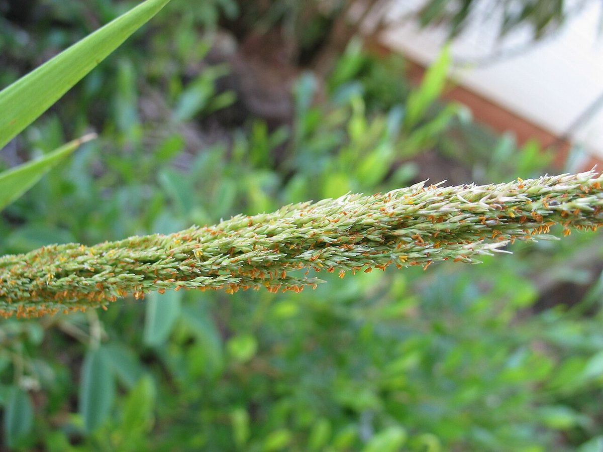
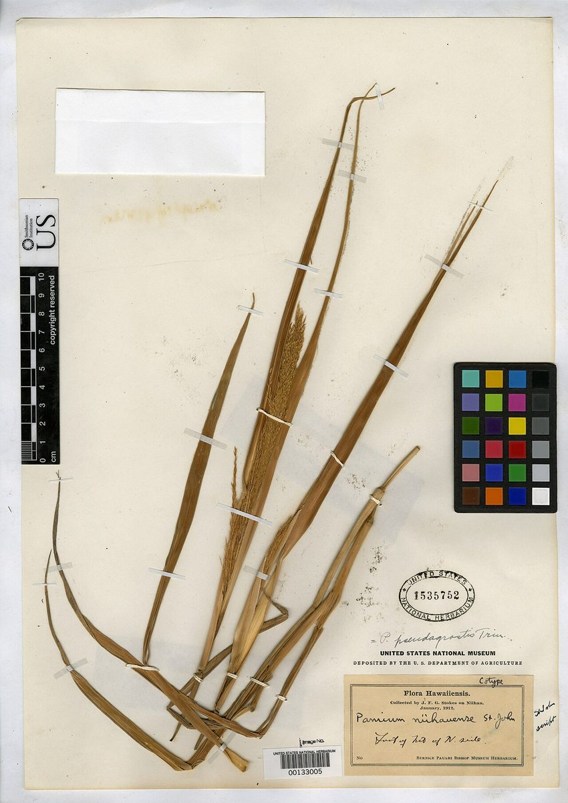

RARE & EXOTIC Dune Beach strand
Panicum niihauense
lauʻehu · Niʻihau panicgrass



Quick facts
| Family | Poaceae |
|---|---|
| Scientific name | Panicum niihauense |
| Hawaiian name(s) | lauʻehu |
| English name(s) | Niʻihau panicgrass |
| Status | Endemic |
| Conservation | US Endangered (federally listed) |
| Coastal zones | Dune Beach strand |
| Occurrence | Originally described from Niʻihau, where it is now considered extirpated. The remaining wild population on the main Hawaiian Islands is on the Kauaʻi side, associated with the coastal strand and dune remnants at the northwest end of the Nā Pali– Kona coast (near Polihale). Sits at the very boundary of the guide's "unpopulated coast" scope; a listed species that a boater or a Kalalau/Polihale hiker may encounter. |
Uncertainty: Whether the coastal Kauaʻi population presently persists as a wild self-sustaining stand at Polihale, versus survives largely through outplanting from cultivated stock, is not fully resolved in publicly available sources; treat any observed clump on the strand as a listed species — observe from a distance and do not trample.
How to identify
- Growth form
- Coarse perennial bunchgrass forming clumps 0.5–1.2 m tall. Not stoloniferous — it does not form the low mat of ʻakiʻaki (Sporobolus virginicus) that shares similar habitat.
- Size
- 0.5–1.2 m tall.
- Leaves
- Long (20–40 cm), narrow (5–15 mm wide) leaf blades, folded or weakly rolled toward the tip, tapering to a fine point. Blades green to blue-green, with a prominent white midrib on the underside; sheaths mostly glabrous but often with a few long hairs near the collar.
- Flowers
- Open, airy panicle 15–35 cm long at the top of each culm, with slender spreading branches. Individual spikelets small (~3 mm), two-flowered, greenish to purplish. Flowers spring through autumn depending on rainfall.
- Fruit / seed
- Small grass caryopsis (grain) hidden inside the persistent lemma and palea after the spikelet matures.
- Bark / stem
- Not applicable — herbaceous. Culms (flowering stems) upright, solid at the nodes.
- Where it sits on the coast
- Coastal strand and back-dune, on sandy or sandy-calcareous substrate; at Polihale, in low remnant dune vegetation behind the beach.
Clinchers (features that lock the ID)
- Coarse tall bunchgrass (0.5–1.2 m) — much larger than mat-forming ʻakiʻaki.
- Wide, tapering, prominently white-midribbed leaf blade.
- Open airy panicle inflorescence at Polihale-side coastal dune.
Look-alikes
- Sporobolus virginicus (ʻakiʻaki, in this guide) — ʻAkiʻaki forms a low, sod-like mat with slender spike-like panicles rising only 10–30 cm; Panicum niihauense forms upright clumps three to four times taller with open, spreading panicles.
- Cenchrus / Pennisetum bunchgrasses (introduced) — Many introduced coastal bunchgrasses have bristly, spike-like inflorescences (buffelgrass, foxtail); Panicum niihauense has an airy, open-branched panicle with tiny greenish spikelets, no bristles.
- Eragrostis variabilis (kāwelu, native bunchgrass) — Kāwelu also forms upright clumps but its spikelets are many- flowered and packed differently; leaves usually more slender and often more rolled than Panicum niihauense.
Ecology
A grass of coastal dune and strand; part of the pre-contact native coastal-grass flora that has been largely displaced across the main Hawaiian Islands by introduced grasses, browsing by feral ungulates, and coastal habitat loss. Recovery efforts include seed collection and outplanting at protected sites. [1], [2], [3], [47]
Cultural significance
Recognized in Hawaiian by the name lauʻehu. Native coastal bunchgrasses provided cover and stability to dune systems in the pre-contact landscape.